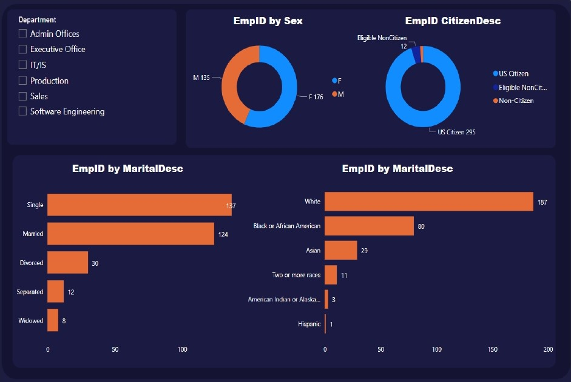

This project mainly focuses on utilising machine learning algorithms to detect fraudulent behaviors, and transactions. To discover insights and partterns in the data, data analysis and techniques such as data cleaning, data exploration, feature engineering and statistical analysis
were used. Data balancing techniques including dimension reduction and near-miss were employed. The project relied on the Local Interpretable Model-Agnostic Explanations (LIME) to generate local explanations for individual predictions.
Data inpection and cleaning forms the heart of every data analysis or project. Dirty data can potentially lead to wrong analysis which can be detrimental to businesses and negatively affect lives. Therefore, this project features thorough and robust cleaning of data with SQL.
Techniques and functions like Convert Date, Substring, ParseName, CTE, Subqueries and Joins were used to clean and transform the USA Nashville Housing Data. A clean data is a catalyst for a succesful analysis producing actionable solutions.
.png)
In this project, I used Tableau to explore and analyse patients' waiting time at Accident and Emergency Unit in Hospitals. It was discovered that, the longer the waiting time, the lower the patient's rating. This analysis will help management to improve operations to reduce longer waiting times.
Click image to interract with the dashboard in the image, else, view all Tableau projects on Tableau Public by clicking the button below.

This project features the exploration of employee data in Power BI where Dax formulas were used analyse the data. High level automated reports and dashboards were created to answer business questions. Other projects were done with this BI tool for cleaning and tranfroming data in
Power Query which are much complex to accomplish in excel. DAX was also leveraged to perform complex calculations and queries on data.
Click image to interract with the dashboard in the image, else, view all Power BI projects by clicking the button below.

Advance Excel functions and formulas were leveraged in these projects. The various datasets spanning from sales, HR, IT Support Desk and many more were analysed with complex formulas such as IF statements, COUNT and COUNTIFS,
Lookups (XLookUp, VLookUp, HLookup) as well as working with dates formulas. In these projects, VBA and Macros were deployed to populate and automate the printing of customers receipts. VLookUp, Index and Match were also used
to populate customers data in a way where a user can enter any ticket number to retrieve desired information. Pivot Tables and interactive dashboards were created for users to filter and explore data to ask business questions,
find data-drieven answers to business questons to support decision-making.